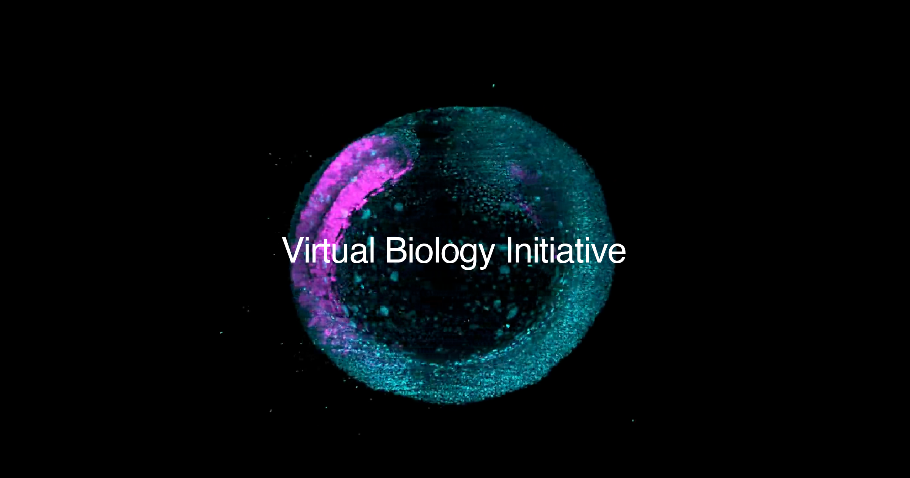

AI 단신 HELLO, HUMAN! / BRIEF 08
AI로 세포 반응을 예측한다,
Biohub 18억 달러 협력 확대
세포의 반응을 미리 예측하는 AI를 만들기 위해, Biohub와 기업·연구기관이 실험 데이터를 함께 모으기로 했습니다.

비영리 연구기관 Biohub(바이오허브)가 10월 7일 ‘가상 생물학 이니셔티브(Virtual Biology Initiative)’라는 공동 연구 사업을 확대한다고 발표했습니다. 미국 에너지부(DOE)와 국립보건원(NIH), 구글 딥마인드, 아이소모픽 랩스(Isomorphic Labs), 메타 등이 참여합니다.
Biohub가 발표한 협력 규모는 18억 달러입니다. 여기에는 투자금뿐 아니라 기존 데이터와 연구에 쓸 컴퓨터 자원, 세포를 관찰하고 측정하는 기술까지 포함돼 있습니다. Biohub 확대 발표 ↗
이 사업이 만들려는 ‘가상 세포’는 약물을 넣거나 유전자를 바꿨을 때 세포가 어떻게 반응할지 예측하는 AI 모델입니다. 연구자가 컴퓨터에서 여러 가능성을 먼저 살펴보고, 유망한 아이디어를 골라 실제 실험과 임상시험으로 확인하도록 돕겠다는 구상입니다. NIH가 설명한 연구 목표 ↗
AI가 이런 예측을 하려면 세포의 모습만 알아서는 부족합니다. 어떤 조건을 바꿨을 때 세포에 무슨 변화가 생겼는지도 배워야 합니다. NIH는 지금보다 더 다양한 세포와 조건에서 얻은 실험 자료가 필요하다고 설명합니다.
NIH는 Biohub와 함께 기존 자료를 같은 기준으로 정리해 AI가 학습에 쓸 수 있도록 할 계획입니다. DOE는 슈퍼컴퓨터와 세포를 관찰·측정하는 시설, 자동화 실험실 등을 활용할 예정입니다. DOE의 참여 계획 ↗
4월 29일 발표한 5년간의 투자 계획입니다. 측정 기술 개발과 데이터 수집 등에 4억 달러, 외부 연구에 1억 달러를 쓰기로 했습니다.
세포를 관찰하고 데이터를 모으는 일부터, 컴퓨터로 분석하고 예측하는 연구까지 지원합니다.
미국 정부가 이 금액을 투자해 마련한 데이터와 저장소 등을 함께 활용합니다. NIH가 이번에 그만큼의 돈을 새로 내는 것은 아닙니다.
기술을 개발하고 실험 데이터를 만드는 데 투자합니다. 한 곳당 3억 달러가 아니라 세 기업을 합친 금액입니다.
Biohub의 4월 투자 계획 ↗ · 10월에 발표한 지원 내용 ↗
이번 소식의 핵심은 AI가 배울 자료와 연구 환경을 함께 마련한다는 데 있습니다. 세포 반응을 정확히 예측하는 AI가 완성됐다거나, 치료 효과가 입증됐다는 발표는 아닙니다. AI의 예측이 실제 세포에서도 맞는지, 치료에 도움이 되는지는 후속 실험과 임상시험을 통해 확인해야 합니다.
모은 데이터를 언제, 누구에게 공개하는지도 살펴볼 부분입니다. Axios 보도에 따르면, 참여 기업은 자신들이 만든 데이터를 공개하기 전 1년 동안 독점적으로 이용할 수 있습니다. Axios 보도 ↗ 다만 이 조건이 다른 참여 기관의 데이터에도 적용되는지는 확인되지 않았습니다.
메타가 참여한다는 이유로 연구 데이터가 페이스북·인스타그램 계정과 연결될 것이라고 단정할 수도 없습니다. 이번 공식 발표에서는 그런 계획이 확인되지 않았습니다. 앞으로는 어떤 자료를 공개하고, 누가 어떤 조건으로 쓰며, 개인정보는 어떻게 보호하는지를 살펴봐야 합니다.
원문과 확인 자료
BIOHUB · 2026. 10. 07 가상 생물학 이니셔티브 확대 발표 공식 발표 읽기- Biohub · 최초 사업 계획과 5억 달러 투자 약속 · 2026. 04. 29
- 미국 DOE · 5년 투자 계획과 연구 시설 · 2026. 10. 07
- 미국 NIH · 자료를 정리하는 계획과 연구 목표 · 2026. 10. 07
- Axios · 데이터 접근 조건 취재 · 2026. 10. 07
2026년 10월 11일(한국시간), 공식 발표와 공개된 기사 내용을 대조했습니다. 투자금이 실제로 쓰인 내역이나 데이터 이용 계약, AI의 성능까지 직접 확인한 것은 아닙니다. ‘헬로우 휴먼의 시선’에는 자료를 읽고 모임의 관점에서 생각해본 내용을 담았습니다.
AI뉴스 목록으로 돌아가기